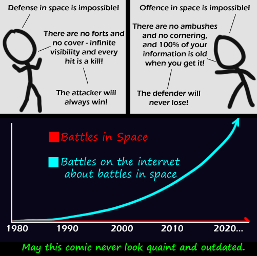

Comic JK 475
When I Feel Like It
⇤
<
?
>
⇥

⇤
<
?
>
⇥
Forum
.
RSS
.
Digg
.
Facebook
.
Reddit
.
Twitter
.
Stumbleupon
truth is a battle in space (discounting shields and long range kinetic weaponry) would probably result in both sides blown to smithereens or leaking air/water/fuel into space. >Sounds like what your mom is currently doing. >>Sounds like what I'm currently doing faggots. The best method would probably involve returning to the old days of organised gentlemanly battles... theres too much space, given the distances that would most likely be involved aiming would be incredibly difficult, and the defender would have time to dodge even lasers > idiot, you can't dodge lasers... they move at the speed of light, which is the limit for the speed at which information would travel, so you'd, at best, get the info of where the laser will hit, right when it hits... >> maybe with some kind of gravitic based communications or scanners.... >> so basically, what you're saying is that if someone shot a laser at Earth from Proxima Centauri, we would have 4 years to dodge it, BUT, we'd only know that when it hits us. >>>Precisely. We're doomed. Unless there are storm troopers on Proxima Centauri. >_> not necessarily. quantum spin pairing holds the possibility of instantaneous knowledge no matter the distance. theoretically if we had a proper relay set up with a quantum spin pair at both ends, they could transmit instantaneous information to communicate. Seriously, what the hell is this shit? "This Fortress World" makes a good (and depressing) argument for the overwhelming superiority of defense-- as long as the planet is under an industrialized despotism headed by a ruthless paranoid. It was written before Sputnik you can dodge lasers, speed of light isn't as fast as the speed of anticipation